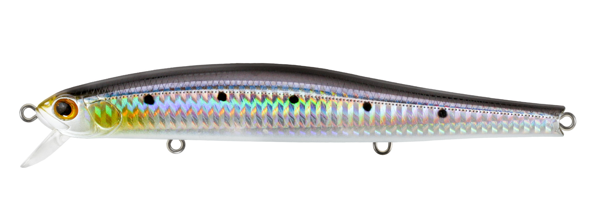
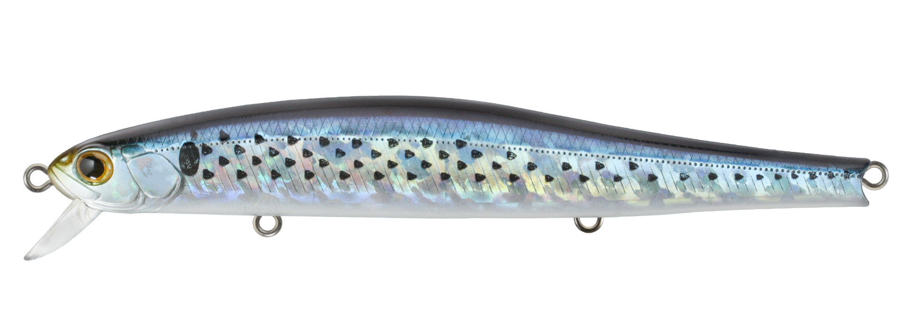
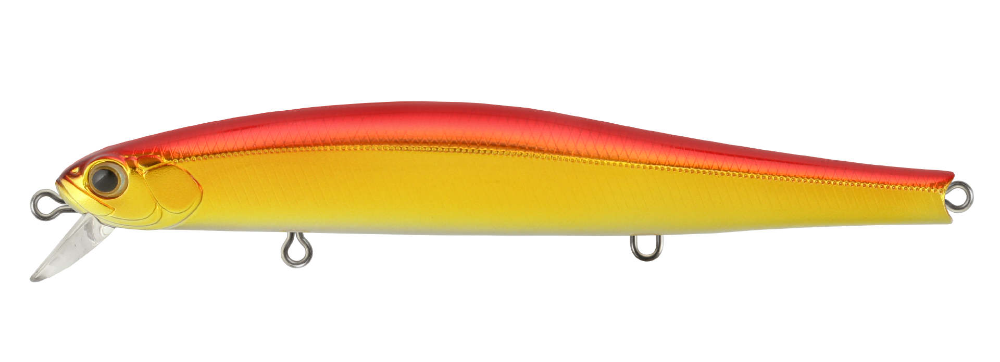
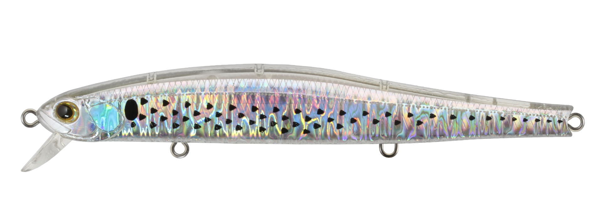
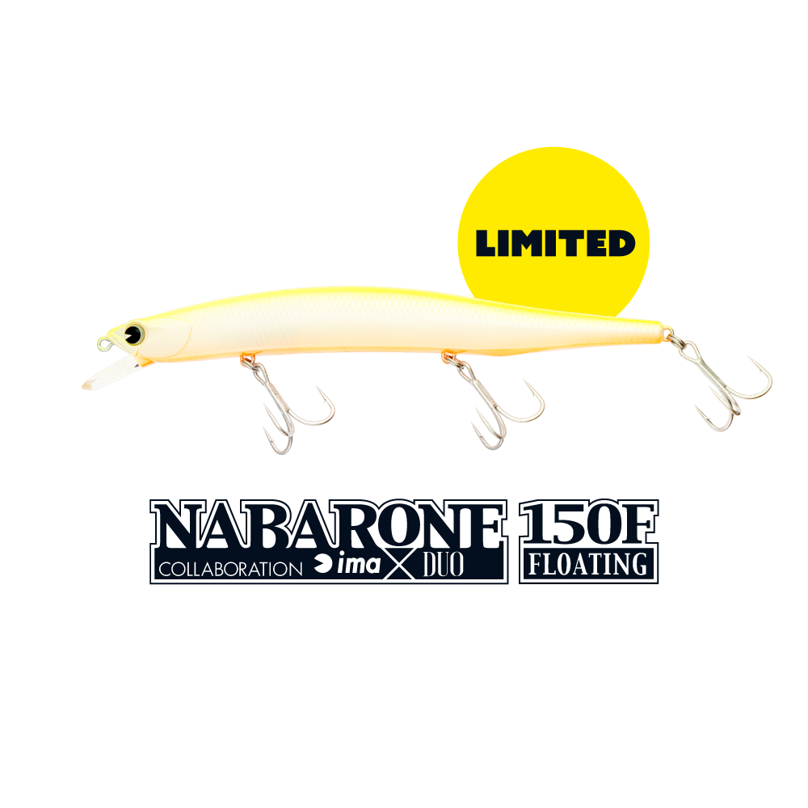
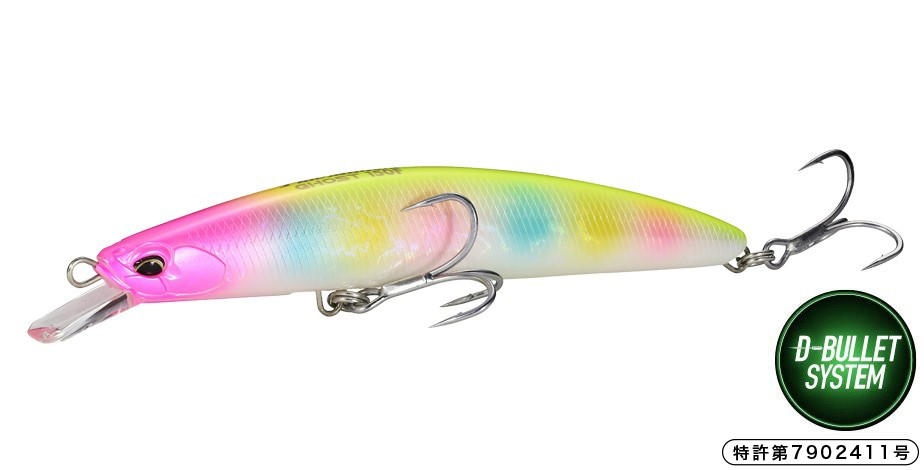

ザブラシステムミノー15F
（ZBL SYSTEMMINNOW 15F）
ザブラシステムミノー15F（ZBL SYSTEMMINNOW 15F）はZIPBAITS（ジップベイツ）のフローティングミノーです。
2026年10月に復刻した150mmのビッグミノーで、公式のキャッチコピーは「食わせのアクションを身につけた大物キラー」。ビッグミノーにありがちな泳ぎのもたつきをなくし、あえてキビキビ感を抑えた餌っぽい泳ぎで、狡猾な大物に口を使わせるのが最大の魅力です。

画像出典:ジップベイツ公式HP
スペック
- メーカー
- ZIPBAITS（ジップベイツ）
- タイプ
- フローティングミノー
- 全長
- 150mm
- 自重
- 26.5g
- フック
- カルティバ ST46TN #3
- リング
- #4
- カラー
- 全7色
- ターゲット
- シーバス（大型狙い）
- 価格
- 2,860円（税込）※2027年1月1日以降は3,520円（税込）
- 発売
- 2026年10月20日出荷
▼今すぐチェック

ザブラシステムミノー15Fの特徴
キビキビ感をあえて抑えた「餌っぽい」泳ぎで、スレた大物に口を使わせるビッグミノー
-
ウォブンロール＋ゆったりした蛇行の食わせアクション
泳ぎはタイトなウォブンロールに、ゆったりした蛇行をプラス。一般的なミノーのようなキビキビ感はあえて抑えめにして餌っぽさを高め、ルアーを見慣れた狡猾な大物にも口を使わせる。
-
もたつきのない、立ち上がりの早い泳ぎ
ビッグミノーにありがちな泳ぎのもたつきを徹底的に排除。泳ぎの立ち上がりが早いため、着水後に見破られにくく、すぐに魚を誘える状態へ移行できる。
-
低重心化のためのMZ-19ウエイト
ウエイトには低重心化のためにMZ-19を採用。150mmのボディでも姿勢が安定し、狙ったコースを引いてきやすい。
ザブラシステムミノー15Fの使い方
基本はただ巻き。キビキビ動かすより、ゆっくりめのリトリーブでウォブンロールと蛇行を出し、ベイトが泳いでいるように見せるのがこのミノーの持ち味だ。
着水後すぐに泳ぎ出すので、着水点から巻き始めの数メートルも食わせのチャンスになる。流れのある場所ではドリフト気味に流れに乗せ、ヨレや明暗の境目を大きなシルエットでゆっくり通しましょう。
ザブラシステムミノー15Fの得意な状況
秋のコノシロやボラなど、大型ベイトにシーバスが付いている状況が最大の出番。
ルアーをよく見ているプレッシャーの高いフィールドで、キビキビ動くミノーには反応しない大型の個体を狙いたい場面や、大きなシルエットでじっくり食わせたい場面で選びたい1本です。
ワンポイント
2027年1月1日から価格が改定される予定です（税込2,860円→3,520円）。気になるカラーがあれば、早めにそろえておくのがオススメです。
大きなミノーは引き抵抗が少ないぶん、巻くスピードが速くなりがち。意識してゆっくり巻くと、このミノーらしい蛇行が出やすくなります。
オススメカラー
ザブラシステムミノー15Fは全7色展開。大型シーバス狙いでオススメのカラーを厳選して紹介します。

718 ホロイワシホログラムのフラッシングが強いイワシカラー。まず1色ならここから。

702 コノシロ秋の大型ベイト、コノシロに合わせたカラー。150mmのシルエットとの相性も抜群。

703 アカキン赤と金の定番アピールカラー。濁りの入った河川や、朝夕のローライト時に。

428 クリスタルマレット/FLクリアボディにホロとドットを配した、透け感のあるボラ（マレット）系カラー。澄んだ水で見切られにくい。
画像出典:ジップベイツ公式HP
ザブラシステムミノー15Fに似ているルアー
-
 ブローウィン140S
ブルーブルー
詳細はこちら＞
ブローウィン140S
ブルーブルー
詳細はこちら＞
全長140mm・自重23gのスローシンキングミノー。逆風を貫く飛距離で、フローティングのシステムミノー15Fでは届かない沖のポイントや、少し下のレンジを探りたい時に。
-

ナバロン150F アイマ 詳細はこちら＞同じ150mmクラスの限定復刻フローティングミノー（23g）。よく飛び強い流れでもしっかり泳ぐ万能ミノーで、大型シーバス狙いで選択肢が重なる1本。
-

タイドミノーゴースト150F DUO 詳細はこちら＞巨魚に挑むための剛性を持つ150mm・33gのフローティングミノー。Dバレットシステムで強風下でも飛ばせるので、大場所でオオニベやランカーシーバスを狙う時に。